Спасибо за то, что играете в Слова из Слова! Здесь Вы найдете ответы на основные вопросы по игре. Если Вы не нашли ответа на свой вопрос, можете написать мне на e-mail: redboxsoftstudio@gmail.com Также я буду рад услышать Ваши идеи и предложения по улучшению игры.
В начале каждого уровня Вам дается длинное слово, из букв которого необходимо составить определенное количество слов, чтобы перейти к следующему уровню. За угаданные слова Вам начисляются подсказки, за которые можно открывать буквы в еще не разгаданных словах. Также можно попытаться угадать слово, воспользовавшись подсказкой, описывающей его, наподобие того как это сделано в кроссвордах.
В игре можно использовать только нарицательные существительные в единственном числе (либо множественном, если слово не имеет единственного числа). Использование аббревиатур и уменьшительно ласкательных форм слова запрещено.
Нарицательные имена существительные обозначают название целой группы объектов, например: град, мир, мама. В отличие от них, собственные имена существительные представляют собой названия отдельных единичных предметов, например: город Рим, древнегреческий бог Зевс, озеро Байкал, имя Маша.
Здесь есть несколько возможных причин:
Вы ошиблись, когда вводили слово.
Слово не подходит по правилам игры (аббревиатура, собственное имя существительное, множественное число, уменьшительно-ласкательная форма)
Слово отсутствует в словаре.
К сожалению, не существует словаря, в котором были бы абсолютно все слова, поэтому я постоянно добавляю в игру новые слова, которые мне присылают игроки. Если Вы считаете, что Ваше слово подходит по правилам игры, Вы можете отправить его мне на модерацию, нажав кнопку с символом "+".
Вы можете отправить слово на модерацию нажав кнопку с символом "+".
Введите слово, которое по Вашему мнению необходимо добавить в игру, его значение, и нажмите кнопку "Отправить".
Так как слов присылают очень много (тысячи) и их обработка требует времени, то не ждите что Ваше слово тут же будет добавлено в игру. Возможно в будущем я ускорю этот процесс, но пока что словарь пополняется далеко не в каждом обновлении.
Разделение на обычные и редкие слова условное. Для кого-то слово может быть обычным, а кто-то такого слова никогда в жизни не слышал. В то же время большинство редких слов - это действительно редкоупотребляемые и малоизвестные слова.
Некоторые игроки предлагают вообще не разделять слова, но на мой взгляд это не самая лучшая идея, так как изначально в подобных играх мне не нравилось то, что ты никогда не знаешь остались ли еще нормальные слова и стоит ли ломать голову дальше. В любом случае очевидно что здесь нужны какие-то доработки и улучшения, и в будущем они обязательно появятся.
В игре есть два типа подсказок:
Подсказки, за которые можно открывать буквы в еще не разгаданных словах.
Подсказки с описанием слова, как в кроссвордах.
Чтобы воспользоваться первым типом подсказок, нажмите кнопку с лампочкой.
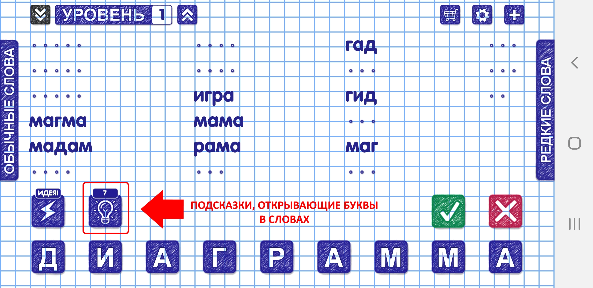
Затем нажмите на слово, в котором Вы хотите открыть буквы.
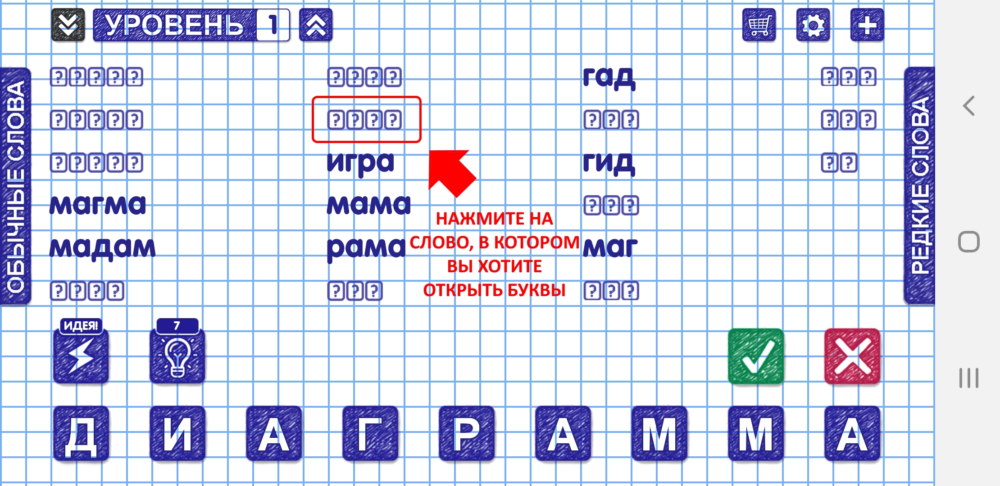
В появившемся окне нажмите на буквы, которые Вы хотите открыть.
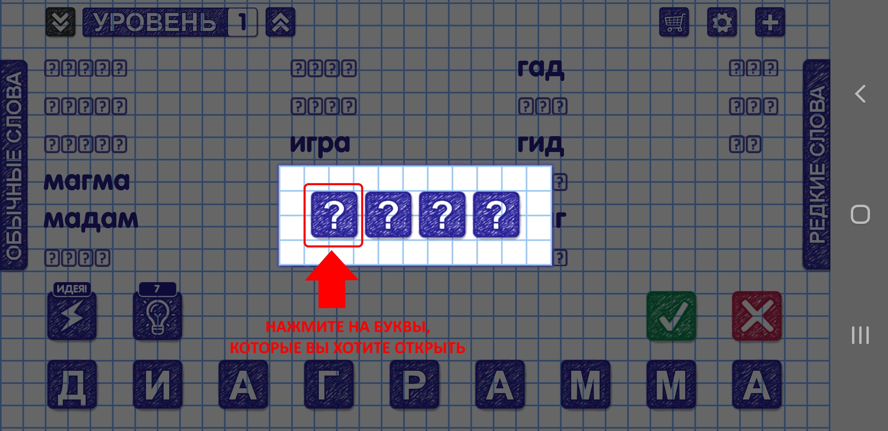
Чтобы воспользоваться подсказками с описанием слова, нажмите кнопку с молнией и надписью "ИДЕЯ!"
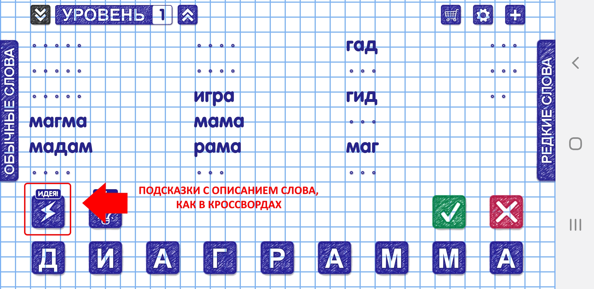
В появившемся диалоге будет написан текст подсказки, а также указано количество букв в загаданном слове.
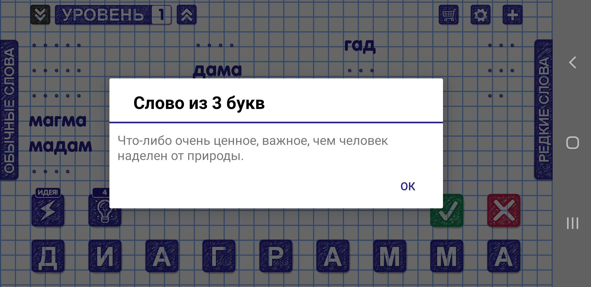
Чтобы перенести прогресс на другое устройство, необходимо на обоих устройствах использовать один и тот же аккаунт Google.
Для начала необходимо сохранить прогресс. Для этого на старом устройстве зайдите в настройки игры, нажав кнопку с изображением шестерёнки.
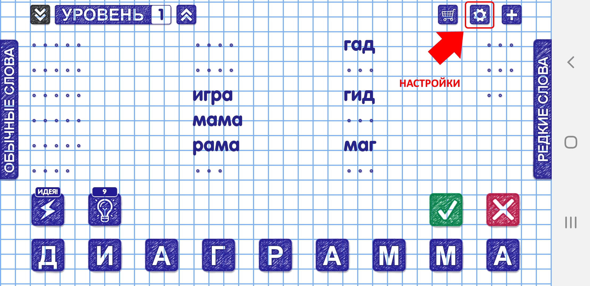
В появившемся диалоге нажмите кнопку "СОХРАНЕННЫЕ ИГРЫ".
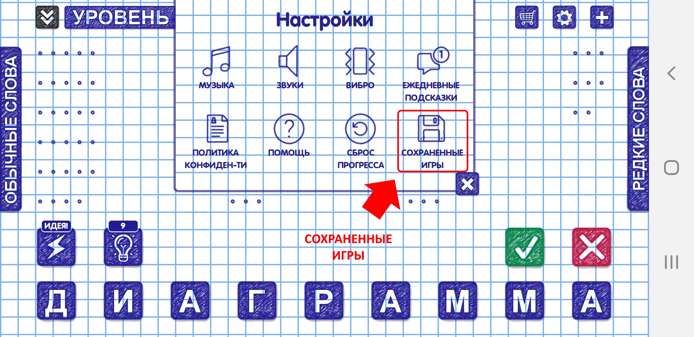
В появившемся окне нажмите кнопку с символом "+", чтобы создать сохранение.
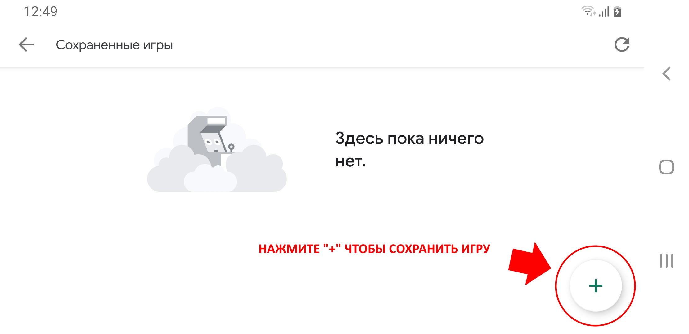
После успешного сохранения будет показано сообщение "Игра сохранена".
Далее необходимо загрузить сохраненную игру на новом устройстве.
Для этого заходим в настройки игры, жмем кнопку "СОХРАНЕННЫЕ ИГРЫ". В открывшемся окне отобразится сохранение, созданное на предыдущем шаге. Чтобы загрузить его нажмите кнопку "Выбрать".
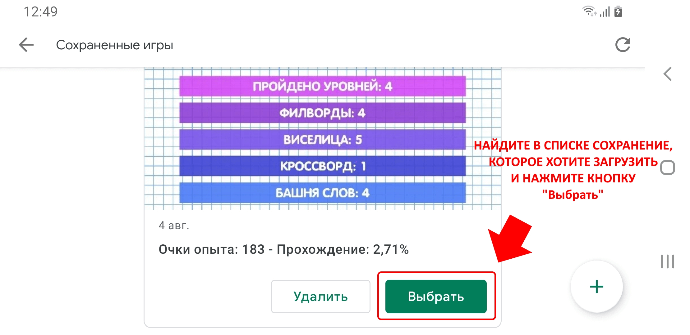
После успешной загрузки будет показано сообщение "Сохранение загружено".
Данная ошибка означает что в Google Play сервисах хранится старая информация о том, что игра не поддерживает сохранения.
Чтобы это исправить, необходимо в настройках телефона в списке установленных приложений найти "Сервисы Google Play".
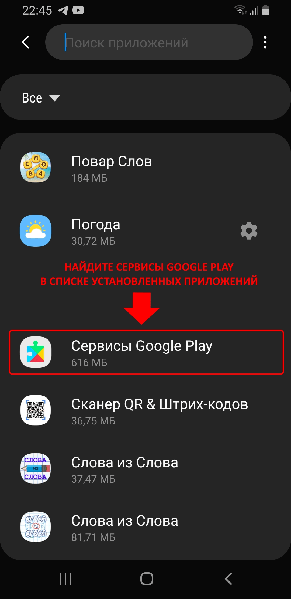
Открыть пункт меню "Память".
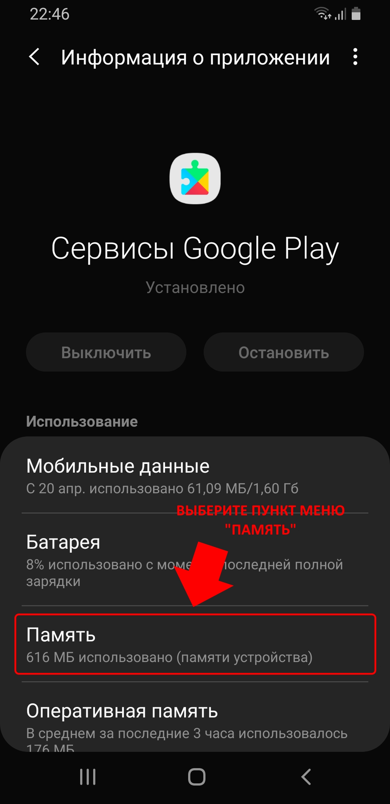
Выбрать "Управление памятью".
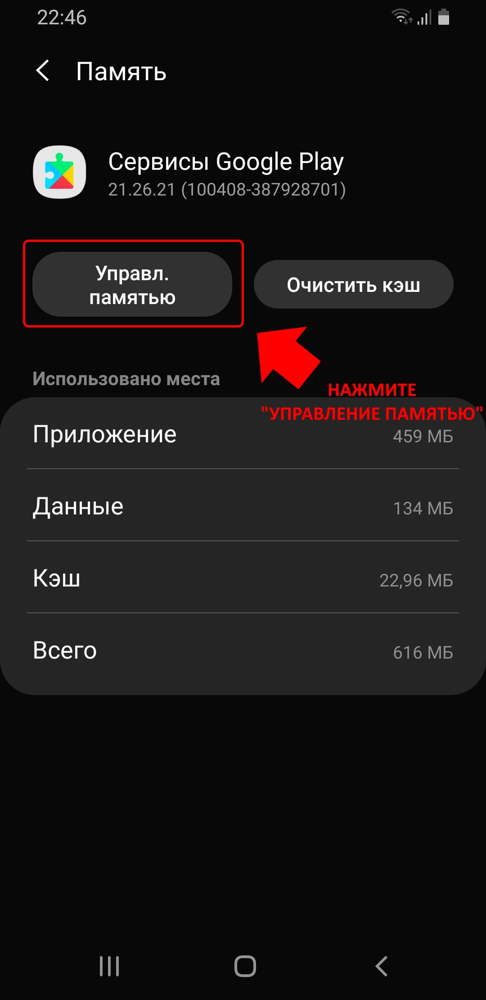
Выбрать "Удалить все данные".
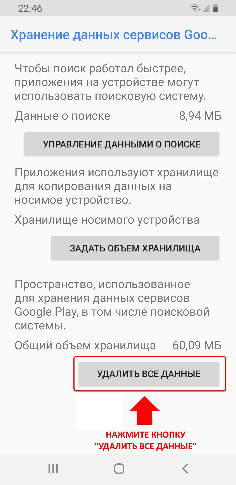
Подождать какое-то время пока Google Play сервисы скачают обновленные данные (у меня это заняло пару минут). После этого Сохраненные игры должны открываться без сообщений об ошибке.
Чтобы начать игру заново необходимо сбросить прогресс.
Внимание! Сброс прогресса невозможно отменить! Рекомендую предварительно сохранить игру, зайдя в пункт настроек "СОХРАНЕННЫЕ ИГРЫ", а затем нажав на круглую кнопку с "+". После этого игра будет сохранена, и в случае чего можно будет загрузить сохранение и продолжить играть с места на котором Вы остановились.
Если вы хотите сбросить прогресс в Словах из Слова или в одной из мини-игр, то нажмите на кнопку с изображением шестерёнки.
В появившемся диалоге нажмите кнопку "СБРОС ПРОГРЕССА".
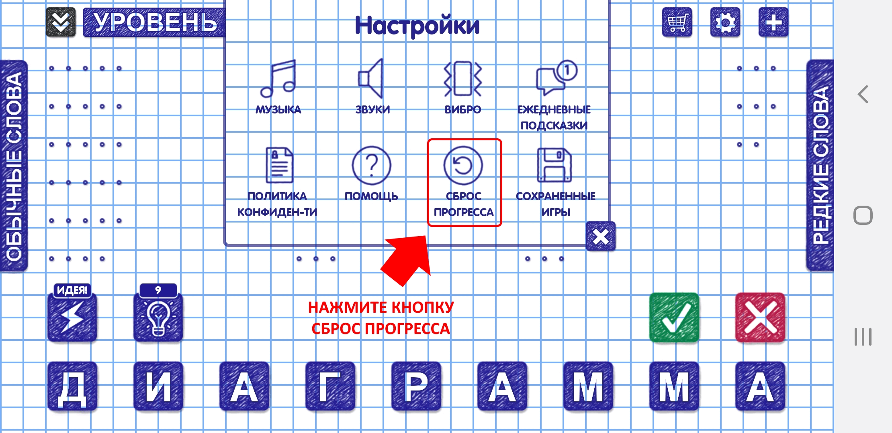
Выберите игры, в которых необходимо сбросить прогресс и нажмите кнопку "Сброс".
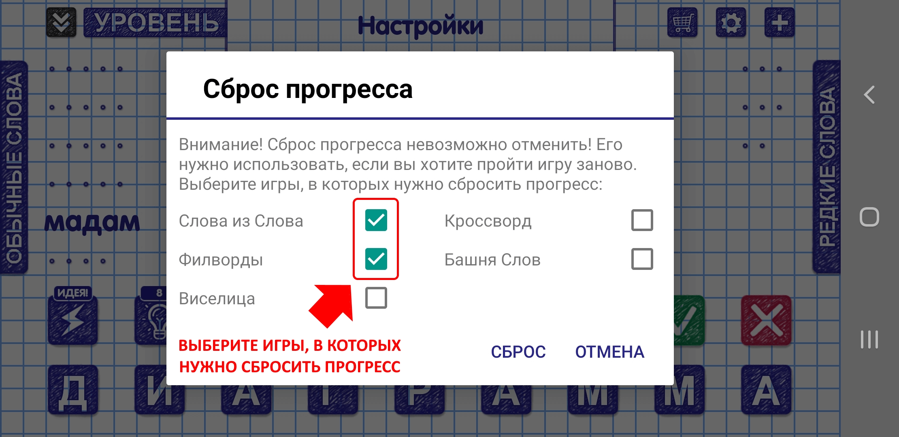
Чтобы включить/отключить музыку, звуки, вибрацию нажмите на кнопку с изображением шестерёнки.
В появившемся диалоге воспользуйтесь соответствующими кнопками.
Чтобы включить/отключить ежедневные оповещения о подсказках нажмите на кнопку с изображением шестерёнки.
В появившемся диалоге воспользуйтесь соответствующей кнопкой.
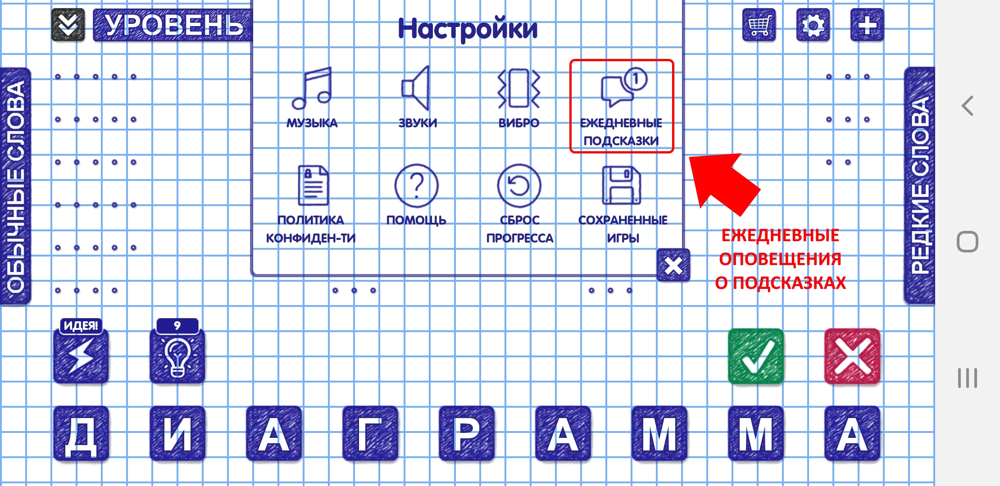
На экране с меню игры, в зависимости от времени года, падают либо звезды, либо снежинки. Нажмите на звезду до того как она упадет за экран, чтобы ее собрать.
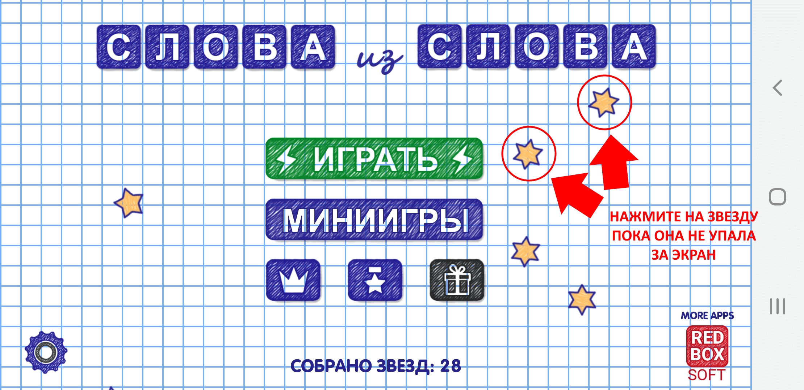
После того, как Вы соберете 10 звезд, Вам будет начислены подсказки. На следующий день можно опять собирать звезды и получать подсказки.